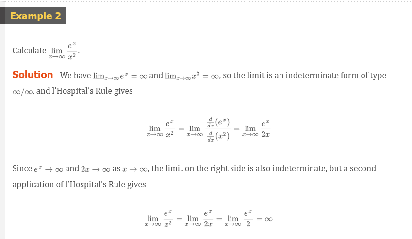
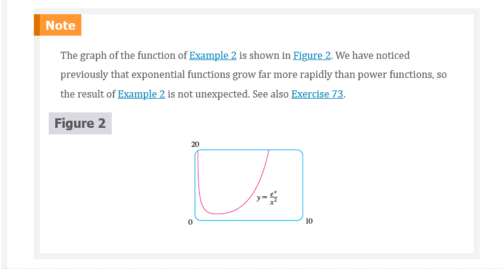
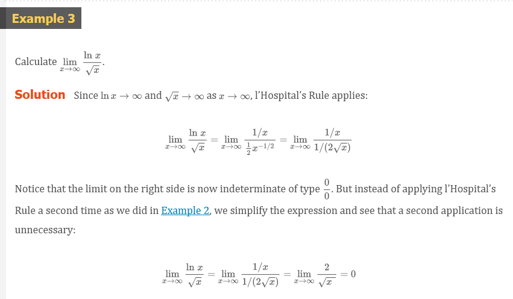
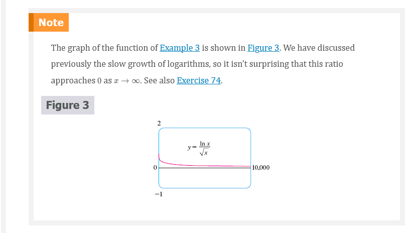
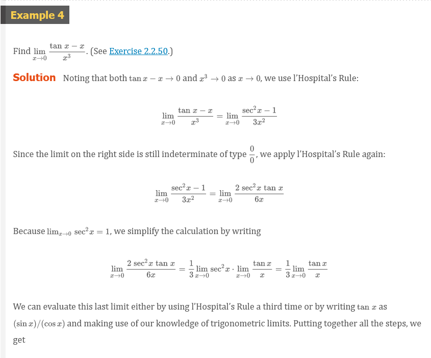
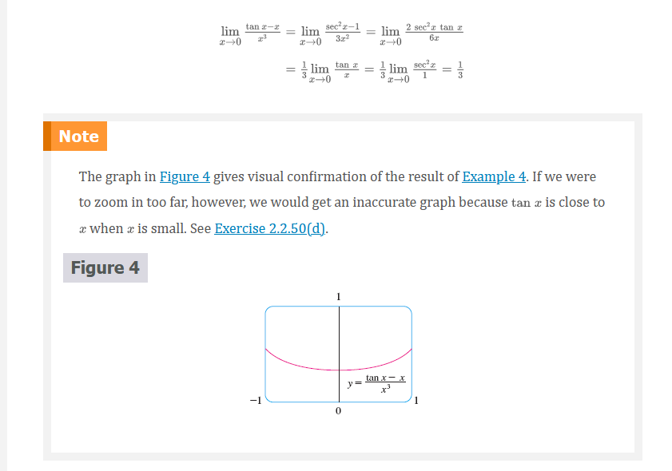
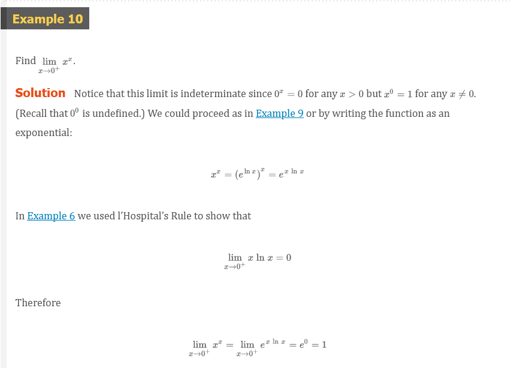
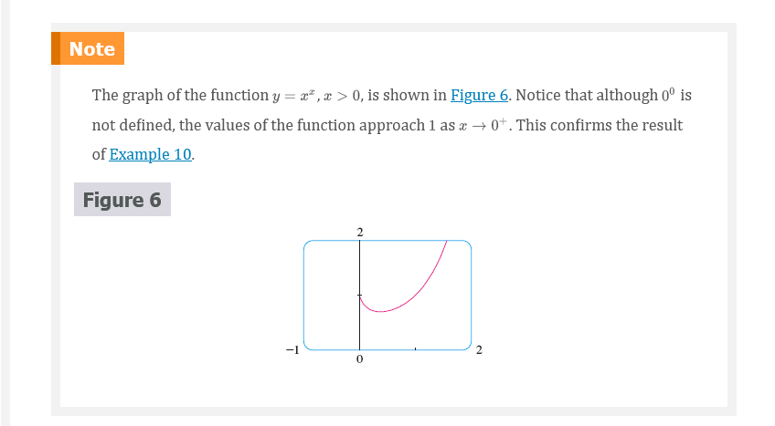

Chapter 4: Indeterminate Forms and l’Hopital’s Rule
Indeterminate Forms and l’Hopital’s Rule
Suppose we are trying to analyze the behavior of the function
F(x) = \frac{\ln{x}}{x - 1}
Although F is not defined when x = 1, we need to know how F behaves near 1. In particular, we would like to know the value of the limit
Definition 1
\lim_{x \to 1}\frac{\ln{x}}{x - 1}
In computing this limit we can’t apply Law 5 of limits (the limit of a quotient is the quotient of the limits, see Section 2.3) because the limit of the denominator is. In fact, although the limit in (1) exists, its value is not obvious because both numerator and denominator approach and is not defined.
In general, if we have a limit of the form
\lim_{x \to a}\frac{f(x)}{g(x)}
where both f(x) \to 0 and g(x) \to 0 as x \to a, then this limit may or may not exist and is called an indeterminate form of type \frac{0}{0}. We met some limits of this type in Chapter 2. For rational functions, we can cancel common factors:
\lim_{x \to 1}\frac{x^{2} - x}{x^{2} - 1} = \lim_{x \to 1}\frac{x(x - 1)}{(x + 1)(x - 1)} = \lim_{x \to 1}\frac{x}{x + 1} = \frac{1}{2}
We used a geometric argument to show that
\lim_{x \to 0}\frac{\sin{x}}{x} = 1
But these methods do not work for limits such as (1), so in this section we introduce a systematic method, known as l’Hopital’s Rule, for the evaluation of indeterminate forms.
Another situation in which a limit is not obvious occurs when we look for a horizontal asymptote F of and need to evaluate the limit
Definition 2
\lim_{x \to \infty}\frac{\ln{x}}{x - 1}
It isn’t obvious how to evaluate this limit because both numerator and denominator become large as x \to \infty. There is a struggle between numerator and denominator. If the numerator wins, the limit will be \infty (the numerator was increasing significantly faster than the denominator); if the denominator wins, the answer will be. Or there may be some compromise, in which case the answer will be some finite positive number.
In general, if we have a limit of the form
\lim_{x \to a}\frac{f(x)}{g(x)}
where both f(x) \to \infty (or -\infty) and g(x) \to \infty (or -\infty), then the limit may or may not exist and is called an indeterminate form of type \infty/\infty. We saw in Section 2.6 that this type of limit can be evaluated for certain functions, including rational functions, by dividing numerator and denominator by the highest power of that occurs in the denominator. For instance,
\lim_{x \to \infty}\frac{x^{2} - 1}{2x^{2} + 1} = \lim_{x \to \infty}\frac{1 - \frac{1}{x^{2}}}{2 + \frac{1}{x^{2}}} = \frac{1 - 0}{2 + 0} = \frac{1}{2}
This method does not work for limits such as (2), but l’Hospital’s Rule also applies to this type of indeterminate form.
L’Hopital’s Rule
Suppose f and g are differentiable and g^{\prime}(x) \neq 0 on an open interval I that contains a (except possibly at a). Suppose that
\lim_{x \to a}f(x) = 0
and
\lim_{x \to a}g(x) = 0
or that
\lim_{x \to a}f(x) = \pm \infty
and
\lim_{x \to a}g(x) = \pm \infty
(In other words, we have an indeterminate form of type \frac{0}{0} or \infty/\infty.) Then
\lim_{x \to a}\frac{f(x)}{g(x)} = \lim_{x \to a}\frac{f^{\prime}(x)}{g^{\prime}(x)}
if the limit on the right side exists (or is \infty or -\infty).
Note 1 L’Hopital’s Rule says that the limit of a quotient of functions is equal to the limit of the quotient of their derivatives, provided that the given conditions are satisfied. It is especially important to verify the conditions regarding the limits of f and g before using l’Hopital’s Rule.
Note 2 L’Hopital’s Rule is also valid for one-sided limits and for limits at infinity or negative infinity; that is, “x \to a” can be replaced by any of the symbols x \to a^{+}, x \to a^{-}, x \to \infty, or x \to -\infty.
Note 3 For the special case in which f(a) = g(a) = 0, f^{\prime} and g^{\prime} are continuous, and g^{\prime}(a) \neq 0, it is easy to see why l’hopital’s Rule is true. In fact, using the alternative form of the definition of a derivative, we have
\begin{aligned} \lim_{x \to a}\frac{f^{\prime}(x)}{g^{\prime}(x)} &= \frac{f^{\prime}(a)}{g^{\prime}(a)} = \frac{\lim_{x \to a}\frac{f(x) - f(a)}{x - a}}{\lim_{x \to a}\frac{g(x) - g(a)}{x - a}} = \lim_{x \to a}\frac{\frac{f(x) - f(a)}{x - a}}{\frac{g(x) - g(a)}{x - a}} \\ &= \lim_{x \to a}\frac{f(x) - f(a)}{g(x) - g(a)} = \lim_{x \to a}\frac{f(x)}{g(x)} \;\;\;\;\; {\color{#ff0000}{[\text{ since } f(a) = g(a) = 0}]} \end{aligned}
 
 
 
Indeterminate Products
If \lim_{x \to a}f(x) = 0 and \lim_{x \to a}g(x) = \infty (or -\infty), then it isn’t clear what the value of \lim_{x \to a}[f(x)g(x)], if any, will be. There is a struggle between f and g. If f wins, the answer will be 0; if g wins, the answer will be \infty (or -\infty). Or there may be a compromise where the answer is a finite nonzero number. This kind of limit is called an indeterminate form of type $0 $ We can deal with it by writing the product fg as a quotient:
fg = \frac{f}{1/g}
or
fg = \frac{g}{1/f}
This converts the given limit into an indeterminate form of type \frac{0}{0} or \infty/\infty so that we can use l’hopital’s Rule.
L’Hopital
L’Hopital’s Rule is named after a French nobleman, the Marquis de l’hopital (1661–1704), but was discovered by a Swiss mathematician, John Bernoulli (1667–1748). You might sometimes see l’hopital spelled as l’Hôpital, but he spelled his own name l’hopital, as was common in the 17th century. See Exercise 83 for the example that the Marquis used to illustrate his rule. See the project for further historical details.
Indeterminate Differences
If \lim_{x \to a}f(x) = \infty and \lim_{x \to a}g(x) = \infty, then the limit
\lim_{x \to a}[f(x) - g(x)]
is called an indeterminate form of type \infty - \infty. Again there is a contest between f and g. Will the answer be \infty (f wins) or will it be -\infty (g wins) or will they compromise on a finite number? To find out, we try to convert the difference into a quotient (for instance, by using a common denominator, or rationalization, or factoring out a common factor) so that we have an indeterminate form of type \frac{0}{0} or \infty/\infty.
Indeterminate Powers
Several indeterminate forms arise from the limit
\lim_{x \to a} = [f(x)]^{g(x)}
- \lim_{x \to a}f(x) = 0 \;\;\;\;\; \text{ and } \;\;\;\;\;\; \lim_{x \to a}g(x) = 0 \;\;\;\;\; \text{ type } 0^{0}
- \lim_{x \to a}f(x) = \infty \;\;\;\;\; \text{ and } \;\;\;\;\; \lim_{x \to a}g(x) = 0 \;\;\;\;\; \text{ type } \infty^{0}
- \lim_{x \to a}f(x) = 1 \;\;\;\;\; \text{ and } \;\;\;\;\; \lim_{x \to a}g(x) = \pm \infty \;\;\;\;\; \text{ type } 1^{\infty}
Each of these three cases can be treated either by taking the natural logarithm:
\text{ let } y = [f(x)]^{g(x)}, \;\;\; \text{ then } \;\;\; \ln{y} = g(x)\ln{f(x)}
or by writing the function as an exponential:
[f(x)]^{g(x)} = e^{g(x)\ln{f(x)}}
(Recall that both of these methods were used in differentiating such functions.) In either method we are led to the indeterminate product g(x)\ln{f(x)}, which is of type 0 \cdot \infty.
Note Although forms of the type $0^{0}$, \infty^{0}, 1^{\infty} and are indeterminate, the form 0^{\infty} is not indeterminate.
 
Video Lectures
- 📺 L’Hôpital’s rule introduction
- 📺 L’Hôpital’s rule: limit at 0 example
- 📺 L’Hôpital’s rule: limit at infinity example
Resources
- 📺 L’Hôpital’s rule introduction
- 📺 L’Hôpital’s rule: limit at 0 example
- 📺 L’Hôpital’s rule: limit at infinity example
Textbook